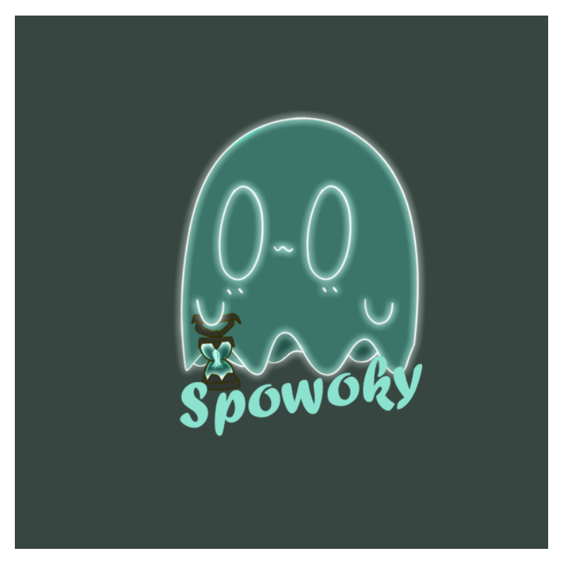

First slide label
Some representative placeholder content for the first slide.

Osu Logo
Ik heb dit gemaakt om met Adobe Illustrator te oefenen. Je kan in de rhythm-game Osu! zelf ook je eigen assets toevoegen.

Third slide label
Some representative placeholder content for the third slide.